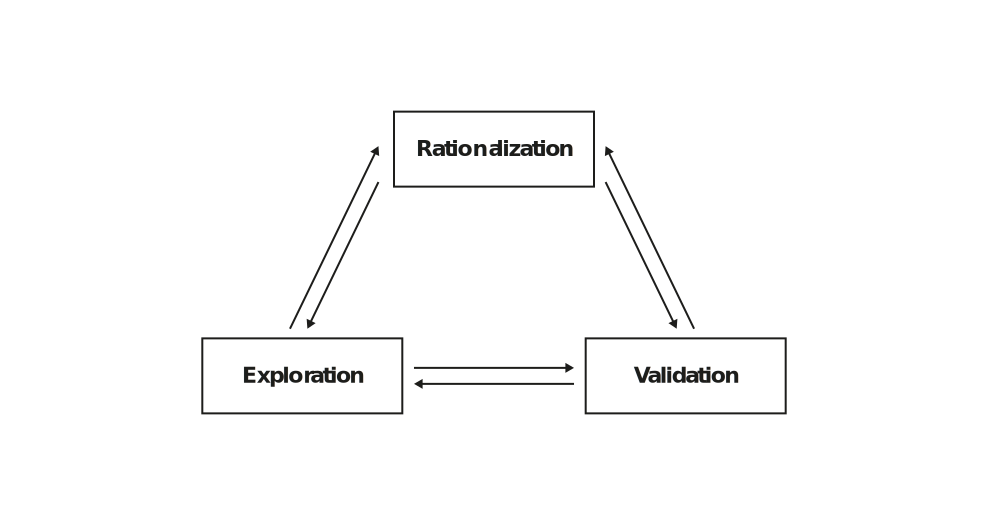
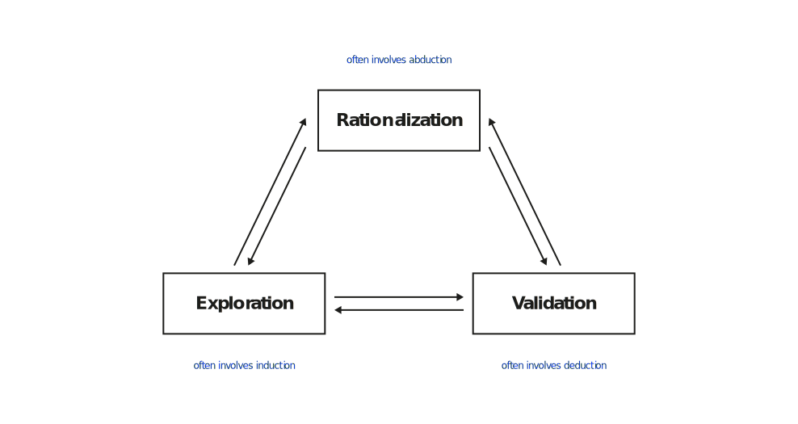
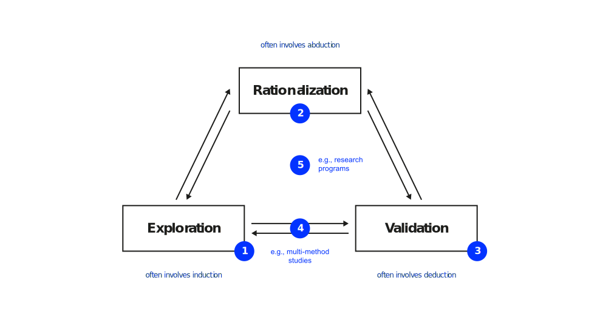

A comprehensive plan for empirical research
Neu-Ulm University of Applied Sciences
I’d like to discuss the findings of your homework: the identification and study of a literature review on your topic.
The action plan
A research design is the blueprint for the collection, measurement, and analysis of data that
Drawing a conclusion from a general premise to a specific instance — from theory to data.
Inferring a general conclusion from a set of specific observations — from data to theory.
Making sense of a specific observation by drawing inferences about the best possible explanation — educated guessing.
Good research involves strategies for exploration, rationalization, and validation (Recker 2021).



The key benchmark against which your research design must be aligned is the problem statement as specified in the research question(s)—the research design must match logically the research question.
| Spectrum | One end of continuum | Other end of continuum | |
|---|---|---|---|
| Aim | Exploratory | vs | Explanatory |
| Method | Qualitative | vs | Quantitative |
| Boundary | Case | vs | Statistical properties 1 |
| Setting | Field | vs | Laboratory |
| Timing | Several cases, one point in time (cross-sectional) | vs | One case over time (longitudinal) |
| Outcome | Descriptive | vs | Causal |
Data, risks, theory, feasibility & instrumentation
The alignment between research question(s) and design does not have to be unidirectional. In fact, most research questions are tweaked and altered over time to reflect an updated research design, although research questions should retain their prominence over the research design (Recker 2021).
Strategy used to answer a research question.
Main strategies of inquiry in IS (Recker 2021):
Speak to your neighbour for 10 minutes and discuss the differences between qualitative and quantitative methods in relation to the following scientific research requirements.
| Requirement | Qualitative | Quantitative | Design science | Computational |
|---|---|---|---|---|
| Controllability | Low | Medium to high | High | Low to medium |
| Deducibility | Low | Medium to high | Low | High |
| Repeatability | Low | Medium to high | High | High |
| Generalisability | Low | Medium to high | Low | Low to medium |
| Explorability | High | Low to medium | Low to medium | High |
| Complexity | High | Low to medium | Medium to high | Medium to high |
Among the most important topics in top journals between 2007 and 2018 were electronic business, IS usage/acceptance, and security and privacy , with the survey method being the predominant research methodology (Mazaheri et al. 2020).
Research recently published papers in your field and, using the main strategies of inquiry in IS, try to find one paper for each strategy.
Explain relevant points of the different research designs that might help you in your work.
For instance the required sample size for a survey or experiment.